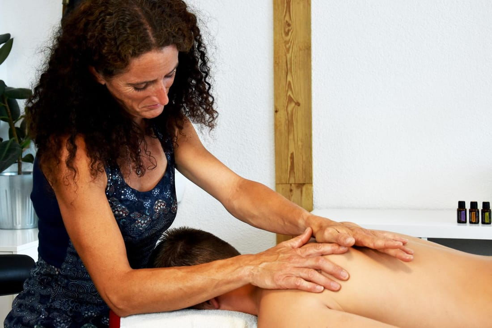

Heilmassage
Heilmassagen werden vom Arzt verordnet und dienen Rehabilitations- sowie Heilzwecken. Sie dürfen ausschließlich auf ärztliche Verordnung und nur von staatlich geprüften Heilmasseur:innen durchgeführt werden.
- Ärztlich verordnet
- Reha & Heilzwecke
- Von der dipl. Heilmasseurin